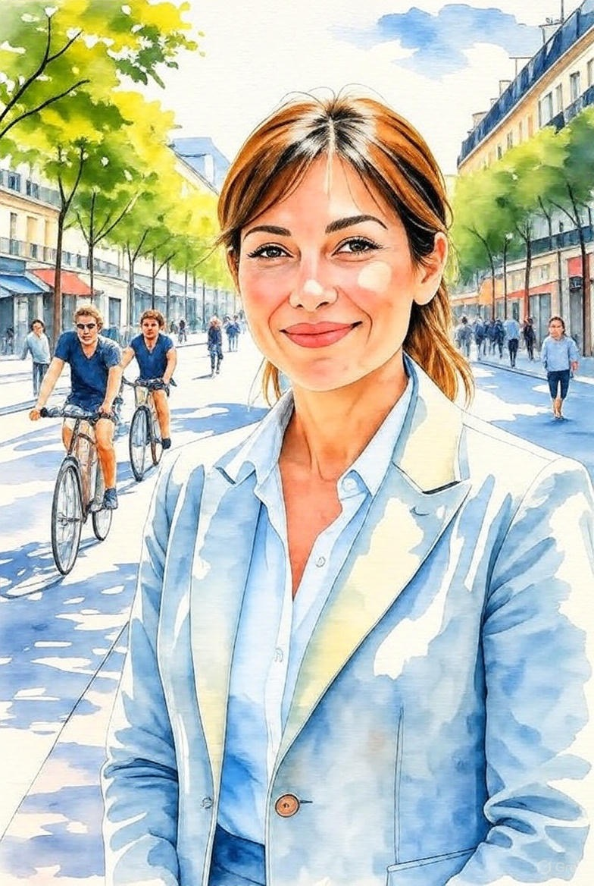
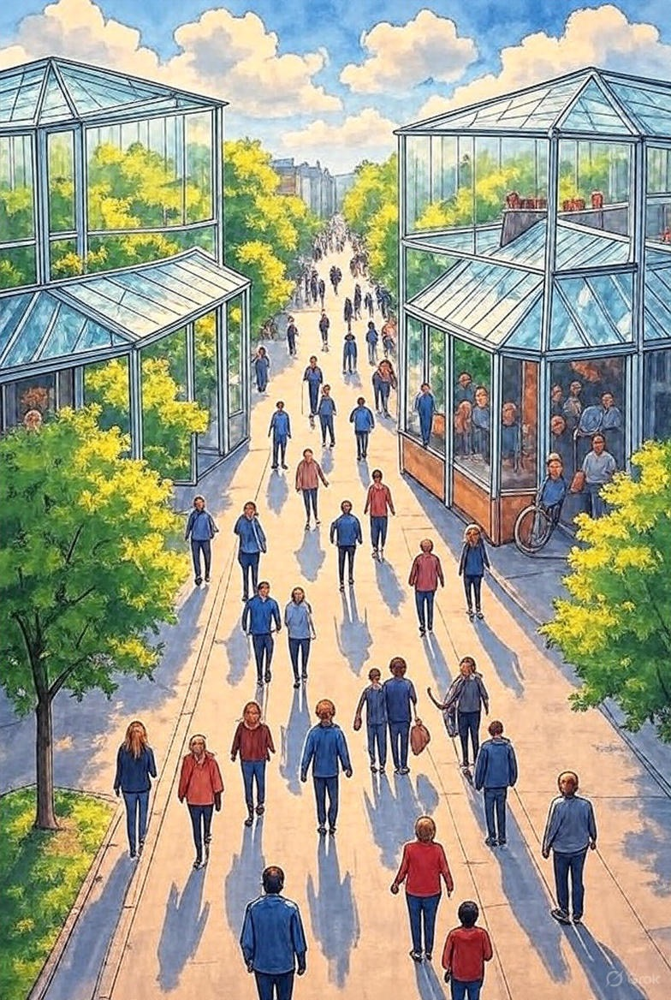
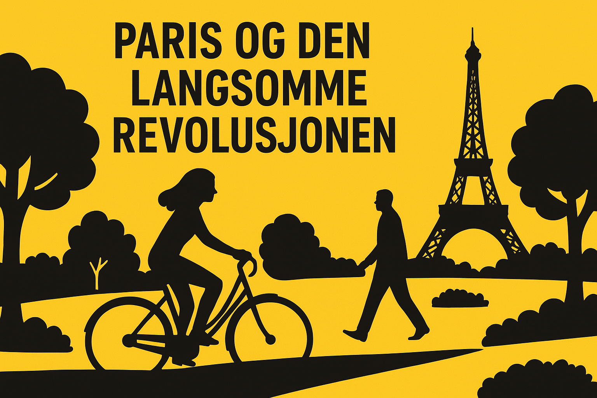

Paris gjør hundrevis av gater bilfrie. – Anne Hidalgo fullfører det urbane eksperimentet
Kommentar – av Mats Gran | Publisert 20. oktober 2025
66 prosent av pariserne har stemt for å stenge fem hundre gater for biltrafikk. Under borgermester Anne Hidalgo har Paris gjennomgått et tiår med radikal urban transformasjon: Der bilene dominerte går nå mennesker til fots, byen har gått fra å være en gjennomfartsåre til et stimulerende sosiale byrom.
Paris har stemt for å erstatte asfalt med trær, grønne soner og stille nabolag. Vedtaket er ikke juridisk bindende, men markerer et klart signal: byens innbyggere ønsker en ville qui respire – en by som puster. Under Anne Hidalgos ledelse har byen redusert biltrafikken med over førti prosent siden 2011, fjernet titusenvis av parkeringsplasser og bygget mer enn tusen kilometer med sykkelveier. For mange er det blitt en ny norm; for andre – særlig pendlere fra forstedene – et symbol på et Paris som stenger seg om seg selv.
Den nye planen skal skape fem til åtte grønne gater i hvert arrondissement. Størstedelen av de fem hundre gatene vil omgjøres til trerekker, møteplasser og midlertidige byrom etter prinsippet om urbanisme tactique – midlertidige strukturer som testes av innbyggerne før de blir permanente. Benker, lekeapparater og grønne lommer skal erstatte parkeringsplassene.
Tiltakene springer ut av ideen om la ville du quart d’heure – «byen på femten minutter». Tanken er at alt et menneske trenger, fra barnehage til matbutikk, skal finnes innenfor kort gang- eller sykkelavstand. Den representerer et oppgjør med bilbyen: et skifte fra mobilitet til nærhet, fra tidsklemme til tilstedeværelse. Kritikerne mener tiltaket er for symbolsk og uavklart. «Hvordan kan vi stemme uten å vite hvilke gater det gjelder, hvilke kostnader det får, og hva slags vegetasjon som skal plantes?» spurte presidentrådgiver Guillaume Rozier på X. Andre peker på at unge trær ikke kan erstatte de økologiske fordelene til gamle, etablerte trær. Likevel har Hidalgo oppnådd noe sjeldent i europeisk bypolitikk: å gjøre klimahandling synlig i hverdagen. Hun har forbudt gjennomfartstrafikk i sentrum, gjort Seinen trygg å bade i igjen innen 2025, og forvandlet Champs-Élysées til et grønt byrom. Over 170 000 trær skal plantes før 2026, og de olympiske lekene i 2024 blir testen på om denne saktebyen faktisk fungerer under press.
Som leder for C40 Cities mellom 2016 og 2019 løftet Hidalgo byenes rolle i klimakampen. Paris mottok FNs Climate Action Award under COP26 for sin konkrete omstilling, og ble et forbilde for byer som Oslo, Milano og Barcelona. Ifølge Clean Cities Campaign støtter et flertall av innbyggerne i 15 europeiske byer lignende tiltak. Hidalgo har også konfrontert sosial ulikhet i sin miljøpolitikk. Hun har innført subsidierte elsykkelordninger på opptil 400 euro, utvidet rimelig boligbygging og forsøkt å bremse turistutleie som driver opp leieprisene. Men spenningen mellom økologi og sosial rettferdighet består – en grønn by kan også bli en dyr by.
Paris’ urbane revolusjon er dermed både inspirerende og advarende. Den viser at klimaomstillingen kan bli håndfast, men også at den må forhandles frem i hver eneste gate, mellom hver parkbenk og hvert fortau. Når bilen forsvinner, må politikken fylle tomrommet med fellesskap. Hidalgo selv kaller det ikke en revolusjon, men en réparation – et forsøk på å sy sammen en by som ble bygget for biler, ikke for mennesker.